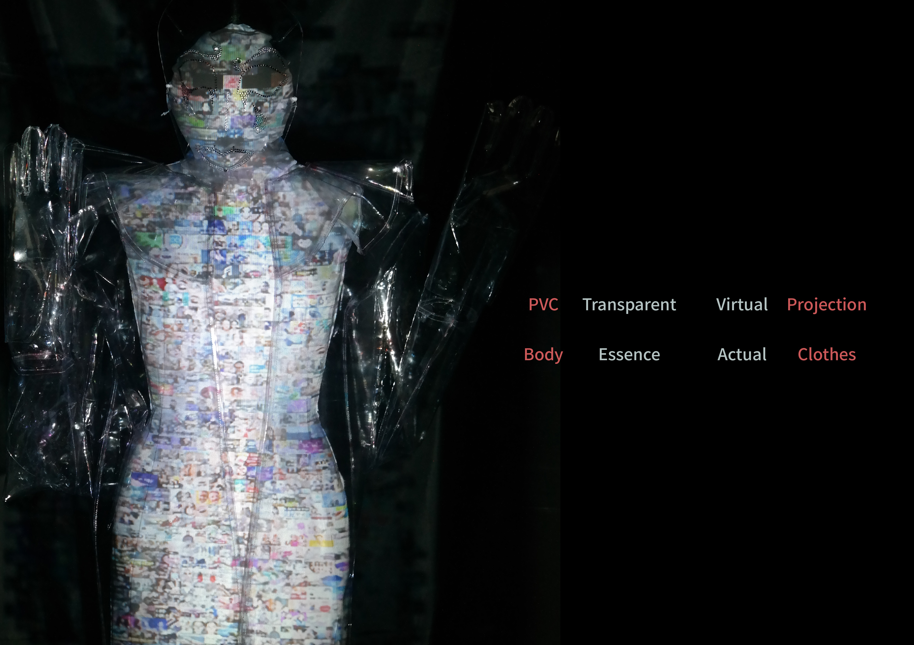
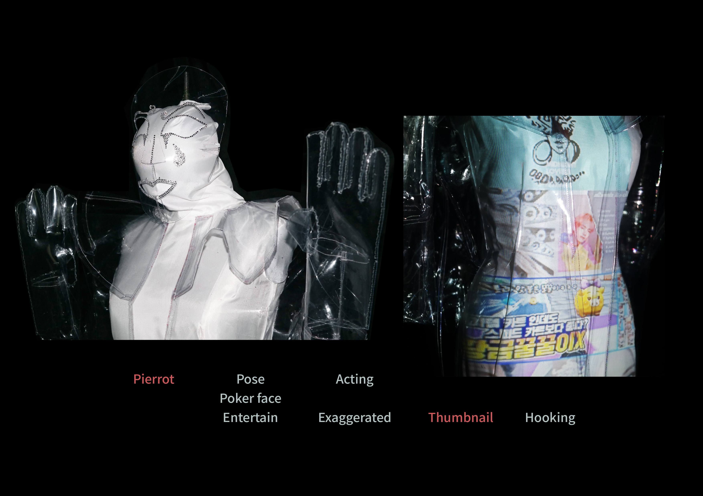
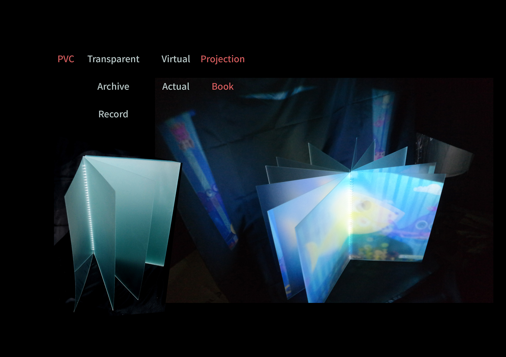
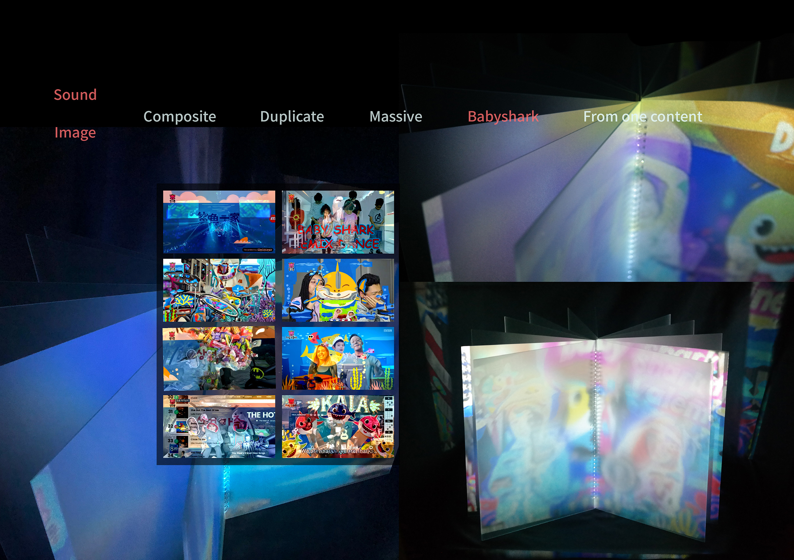
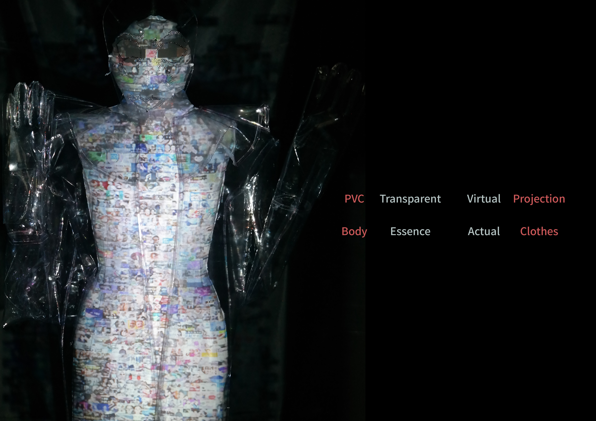
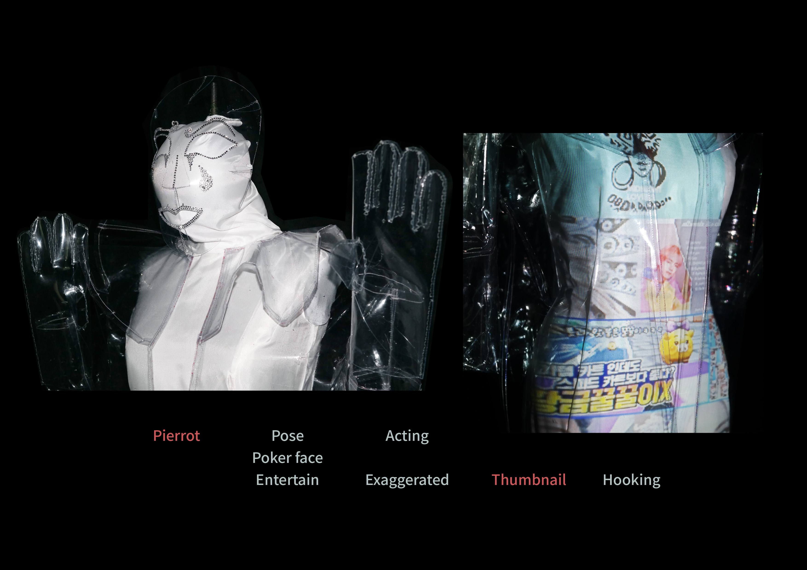
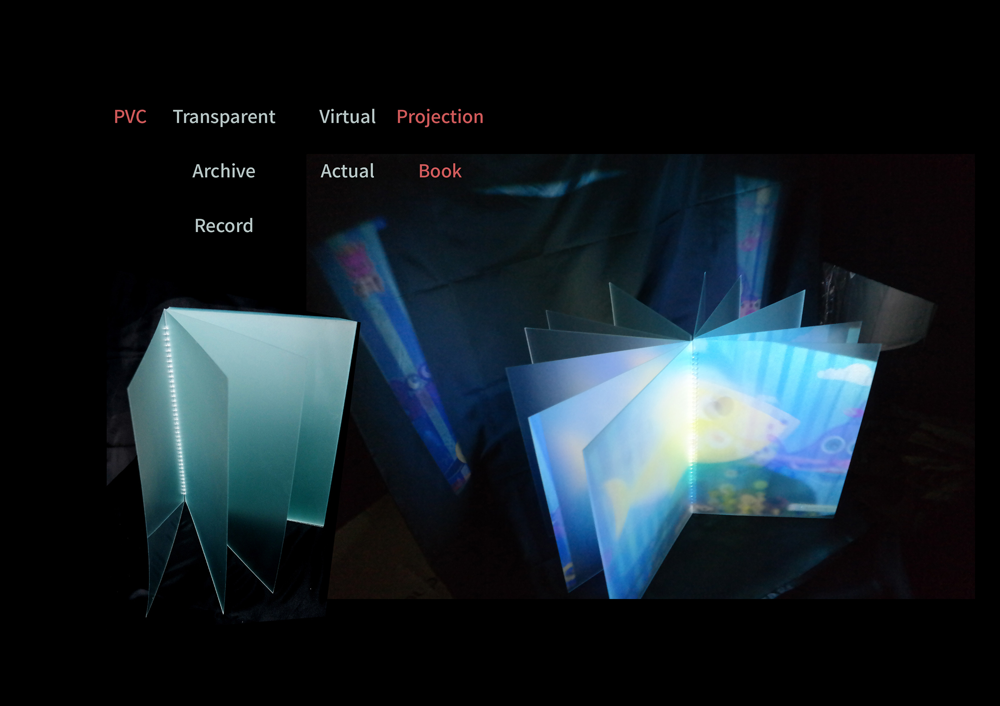
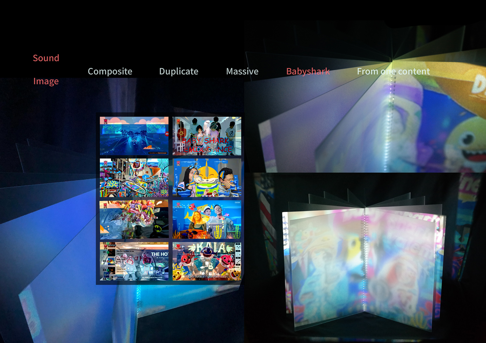

Installation

Installation2

Sculpture

We believed that idol statues brought us strength and abundance. what will play such a role at this point? people think that they can get power and capital if they become creators or through the contents created by creators. These might be the idols in modern times.

